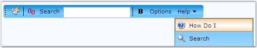
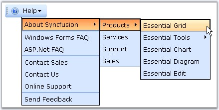

The ButtonType property enables to customize the type of the buttons used in the toolbar. Every button on the toolbar can be altered independently to display either Regular or Toggle or DropDown button types.
|
ToolBar Item Property |
Description |
|
ButtonType |
Specifies the toolbar button type. The options included are as follows: · RegularButton · ToggleButton · DropDown |
Programmatically the button types can be changed as follows.
|
[C#]
ToolBar1.ButtonType = ToolBarButtonType.Regular; |
|
[VB]
Private ToolBar1.ButtonType = ToolBarButtonType.Regular |
Regular Button
This option displays the regular buttons on the toolbar.
Figure 263: Regular ButtonType
Toggle Button
This option displays the toggle buttons on the toolbar. To achieve the radio-button functionality, individual toggle buttons can be combined as a group.

Figure 264: Toggle ButtonType
For the toggle buttons, initially the buttons can be maintained in pushed or selected state by enabling the pushed property.
|
Property |
Description |
|
Pushed |
Specifies whether the pushed state is enabled or not. |
Programmatically a toggle button can set by default in the pushed state as follows.
|
[C#]
ToolBar1.Pushed = true; |
|
[VB]
Private ToolBar1.Pushed = True |
Toolbar toggle button type items can be set in the pushed or unpushed state using the following methods.
|
Method |
Parameter |
Description |
|
Push |
obj, oEv, bool |
Sets item into pushing state. First parameter is identifier of HTML-element, index of item array or item object. Second parameter represents event. If third parameter is true then ClientSideOnItemSelect will be called. |
|
UnPush |
obj, oEv, bool |
Sets item into unpushing state. First parameter is identifier of HTML-element, index of item array or item object. Second parameter represents event. If third parameter is true then ClientSideOnItemSelect will be called. |
Here, on button click, the respective Pushed and UnPushed events will be triggered.
|
[script]
<script type="text/javascript"> function PushItem() { toolbar.Push("Toolbar1_Item1", null, true); } function UnPushItem() { toolbar.UnPush("Toolbar1_Item1", null, true); } </script> |
|
[VB]
<cc1:ToolBar ID="ToolBar1" runat="server" ClientObjectId="toolbar" AutoFormat="Office2007 Luna Blue" EnableCallbacks="true"> ..... </cc1:ToolBar> <input type="button" onclick="PushItem()" value="Push" /> <input type="button" onclick="UnPushItem()" value="UnPush" /> |
DropDown Button
This option displays the dropdown button type for the toolbar items.

Figure 265: DropDown ButtonType
See Also